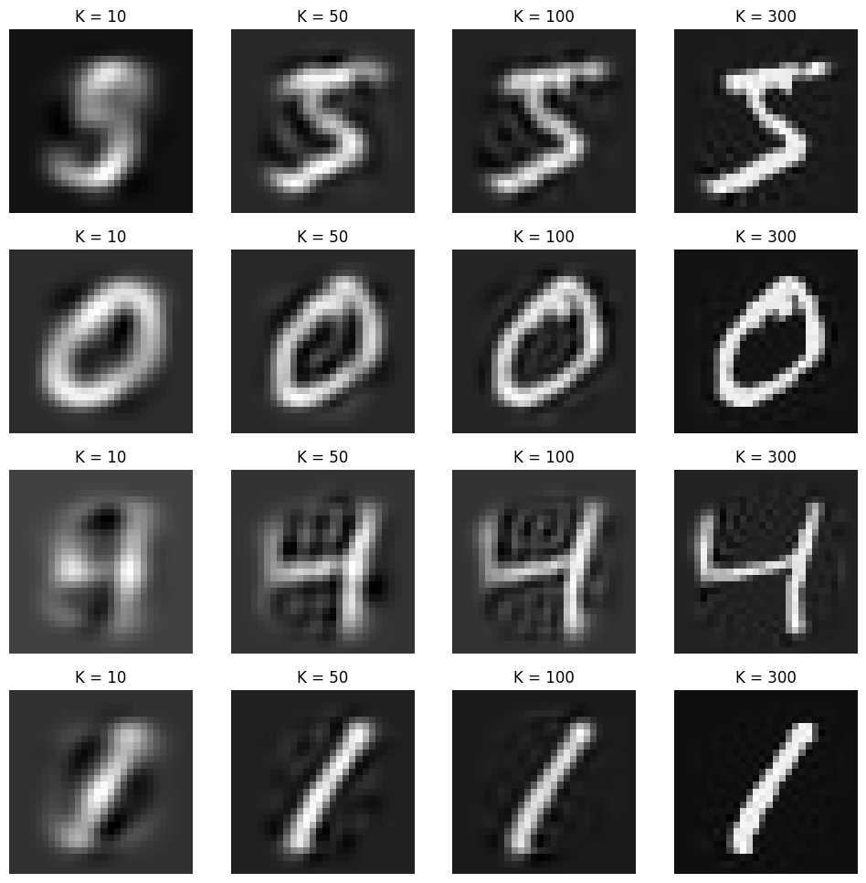

Hey guys! Since class is over and im back at Taiwan, I want to share some learning on some mathematical foundations for ML. I’m not sure what I want to cover nor how deep I want to cover, although I’ll try to make this as approachable for people.
Prerequisites:
Matrix Operations and Identities, Basis, Diagonalizability, Eigenvalues and Vectors, Variance and Covariance
What is PCA and Why?
Principal Component Analysis (PCA) is a powerful statistical technique commonly used for dimension reduction and simplification, while retaining the important information in the data.
Consider a typical RGB image with dimensions of 224 x 224 x 3, totaling 150,528 data points for a single image. That is quite alot of data points for each image! In reality, many of these points are correlated and don’t significantly contribute to our understanding of the image’s content—altering a few pixels won’t change whether an image of a cat is recognized as a dog.
Performing dimension reduction with PCA can speed up computation by reducing the number of dimensions to process, allowing only the most crucial information to be retained while removing redundant, useless data (noise).
Formulating and Solving PCA
Consider a dataset where each data point xi has m features, represented as columns in the matrix X. Here, X is a m×n matrix with datapoints x1,…,xn. We want to preprocess it to mean = 0.
The goal of PCA is to reduce the dimensionality of this dataset from m to k (where k<m) by finding a new orthonormal basis β′={β1′,…,βk′}, β1′≥⋯≥βk′ that “best expresses” the variability in the data.
After obtaining β′, each data point xi is projected onto this new basis to obtain:
yi=(xi⋅β1′)β1′+⋯+(xi⋅βk′)βk′
where we denote Y as a matrix whose column i is the coefficients of yi.
We can also write this projection process as a matrix equation:
Y=BX
Where the i'th row Bi=βi′. (This equation is also called change of basis)
Optimization Objective
We need to clairify what “best expresses” meant in the previous paragraph.
In the best case, we would want each principal component have the highest variance. High variance indicates wide spread from the mean, which essentially means we retain as much information as possible from the original dataset.
Futhermore, we would wish the covariance between the principal components is minimized. Having high covariance means the components are correlated, and would be redundant.
Combined together, it’s easy to see in the most optimal case, the covariance matrix for Y, CY=n−11YYT, should be a diagonal matrix.
Our problem now becomes finding B that satisfies our goals, which we can find out by manipulating some equations:
where Dk contains only the largest k eigenvalues.
Thus, We’ve shown choosing B=PkT ensures that CY is diagonal, effectively making each principal component capture distinct variance from the dataset, and “best expressing” the data as per our initial goal.
We are also guaranteed that B forms a orthonormal basis, since P is also orthonormal due to being eigenvectors of symmertrical matricies.
Examples
After roughly going through the idea behind PCA, I will give two examples to make the process even clearer.
Example 1: Tabular Data
This example will go through the process of PCA mathematically via a simple tabular a data.
Our dataset contains 4 data points aranged in columns and 5 features for each data point. I designed it so x2 is around 2 times of x1, and x4 is two times of x5, and x3 is independent.
Step 1. Center the data
We first want to make the mean of the data 0 to calculate the covariance matrix later.
defPCA(images, k): # Flatten the image and center the data images = images.reshape([images.shape[0], -1]) mean = images.mean(0) images = images - mean # Calculate covariance matrix and eigenvalues/vectors cov_matrix = torch.matmul(images.T, images) / (images.shape[0] - 1) eigen_values, eigen_vectors = torch.linalg.eigh(cov_matrix) # Get eigenvectors w.r.t top k eigenvalues eigen_vectors_k = eigen_vectors[:, -k:] # Get Y, matrix with coefficients w.r.t new basis projected_data = torch.matmul(images, eigen_vectors_k) # Reconstruct images new_images = torch.matmul(projected_data, eigen_vectors_k.T) + mean return new_images

Afterword
PCA is quite an old, yet powerful linear dimension reduction algorithm. The whole encoder-decoder architecture, and embedding systems all use dimension reduction, so this is very important! If you want to learn more about dimension reduction, (deep)auto-encoders are a good place to start. Good luck!
It took me quite some time to compose this blog, so I hope it was clear and concise for you to understand.
My freshman year is finally over, and after my grades all roll out, I think I will make a short blog to summarize up my first year in college!